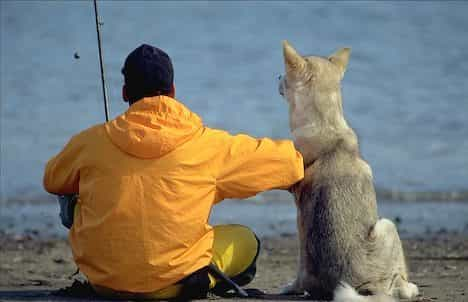

Trevor is a fishing instructor has been active in the sport since the age of 5. He is the owner of Fishing Tips Depot


The call of the wild captures the attention of many. While some go out into nature once in a while, others spend their lives out there working. One such path to spending your days outdoors is becoming a commercial fisherman.
When you walk into the grocery store or market, you see fresh fish chilling on ice. These fish don’t just magically appear—they are often caught out in the oceans and seas. The process for capturing these fish is not easy, and this is where commercial fishing comes in. Commercial fishing involves fishing using nets, traps, or dredges out in open water, usually a sea or ocean. Crews will head out to sea searching for whatever seafood is in abundance. They’ll haul in as much fish and other marine life as they can to make the most profit.
Just know that commercial fishing is far from leisurely fishing. It’s a grueling experience that can test the limits of both the mind and body. Expect to spend many days aboard a ship with little sleep, rest, and basic comforts. Also, commercial fishermen understand navigation, boat maintenance and operation, as well as standard fishing procedures.
Interestingly enough, the life of fishermen and related jobs have been featured on TV shows like the “Deadliest Catch.” While these do give a good insight into the job, they are just reality television. If you want to become a commercial fisherman because you saw it on TV, you may want to reconsider. Sadly, many fishermen die regularly each year out at sea when conditions become too rough. Additionally, there aren’t many formalities in this line of work. Don’t expect great benefits, if any, such as vacation time and leave.
That said, becoming a commercial fisherman can be highly rewarding, both financially and mentally. You will make a lot of money in a short amount of time, develop life-lasting memories, and you will also be given a tough life test that will make you a better man.
There are a few reasons guys become commercial fisherman. Yet the reason that stands above them all is money. While commercial fishing won’t make you rich, it pays a good amount of money in a short period of time. Plus, if the pay was lousy then most guys would not put up with the conditions aboard a fishing vessel.
If you want to become a seasonal fisherman, then figure out how you can accommodate this line of work into your schedule. If you have a few months off every year, then you could put that time to good use and get aboard a fishing vessel.
Because there isn’t a short supply of people looking to be fisherman, there are some hurdles that you’ll have to overcome to get on board a ship. Here are a few tips to keep in mind:

Fishing is a very tight-knit industry. It’s a generational line of work, and crew members often are related to the captain of the ships, or are connected through them somehow. Although there isn’t much in the way of networking in this industry, look to contact different fishing ships, or even head out to places where fisherman gather for socializing.
To meet the right people, you have to be in the right place. Certain states and cities have more fishing than others. If you live far inland on dusty plains, there aren’t going to be any fishing vessels. Make sure you live in or near a city on the water, especially in an area where there is a lot of commercial fishing. Hang out by the fish market and docks if you feel compelled!
Learning fishing comes from spending time on the water, not the classroom. But if you want to really learn the details of the industry, boats, navigation etc. then consider taking a course on commercial fishing. The Coast Guard has a list of approved resources via Bls.gov. Additionally, you should make an effort to do some research online about the topics. A quick Google search should yield some information about fishing in your area.
Although most of what you learn will come from actually fishing, it’s a good idea to learn the technology you will encounter on the boats. Technology will include navigational tools, radio communications, fish finders, and even the ropes and nets that are used.
There are a couple of ways to get your first job. If you’re bold and live near a commercial fishing dock, then simply make your way down there. Inquire to deckhands, captains, and everyone in between if they need an extra hand. While you may get a lot of rejections, you may find yourself in luck with a menial job aboard. This is nothing to fret at because it’s a great way to start. Just be prepared to start ASAP as fishermen can’t be waiting months to fill out paperwork when they’re in desperate need of another deckhand.
If you’d rather not try to get a job through just showing up, check out job boards looking for fishermen. For example, if you live in Alaska, check out Alaska Job Finder. Search for positions in your local area, or be prepared to go where there are a lot of positions available.
Experience is certainly preferred, but not entirely necessary. The need for an extra hand on deck outweighs your credentials. That said, if you don’t have luck right away finding a job then continue to pursue the proper certifications, take courses, and increase your general knowledge of the field—doing so will only increase your odds of getting a job.
It’s hard to nail down an exact salary for commercial fisherman—it’s not exactly a corporate type setting with everything well tracked. Another reason for this is that the fishermen are paid a percentage of what the entire ship brings in. This can depend on a number of factors such as the weather and the price of fish. But to do the math, if a ship brings in $150,000 in a 8 week season, and a fisherman’s cut is say 10%, they’ll make $15,000. Not bad for a couple months of work.
It’s hard to peg an exact hourly wage to this job for several reasons, including the aforementioned way in which it’s split. Income will definitely vary year to year. It’s also not the most stable line of work.
Enticed at the prospect of starting a commercial fishing business? There’s certainly a lot of money to be made, especially depending on what you catch, where you’re located, and the time of year.
That said, there’s a lot that goes into a business like this. Not only does it require investments and overhead costs, but there are a number of licenses that one must obtain. You must do your due diligence in making sure that you have the proper licenses and adhere to other regulations, as this industry is closely scrutinized.
Of course, if you have little experience in commercial fishing then you’ll probably want to hold off. It’s essential to not only understand the profits of an endeavor like this, but also how to operate a fishing vessel.
The rewards of commercial fishing do not come without risks. Commercial fishing is in fact one of the most dangerous occupations according to the CDC, with dozens of fishermen dying yearly. Of course this varies depending on the conditions you work under, but it still should be made clear.
Despite the danger, it’s still an appealing line of work. You spend time out in the open water with hardworking men, you challenge yourself mentally and physically, and you get paid well. If this sounds appealing then becoming a commercial fisherman is something you should seriously consider.
Read More: The Anti-Male Commercial